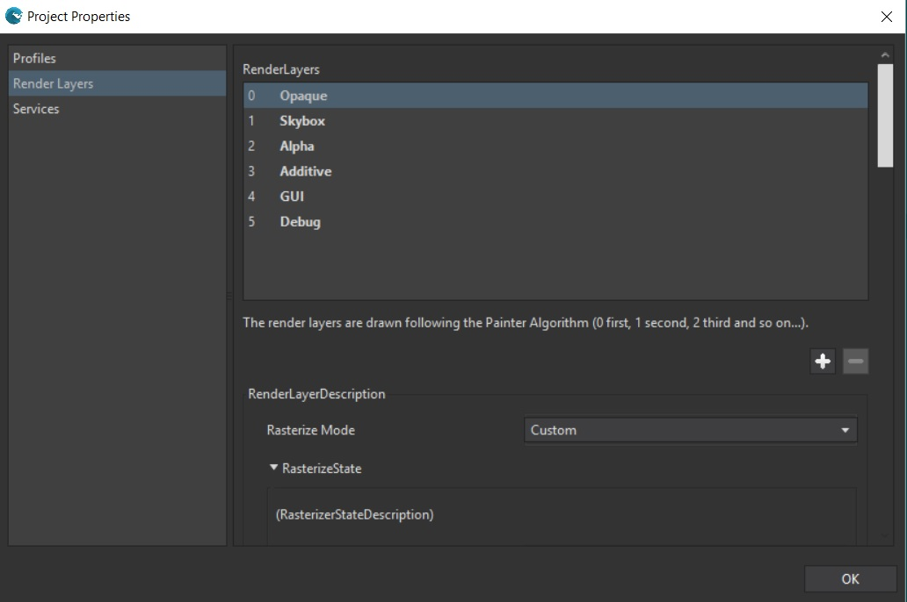
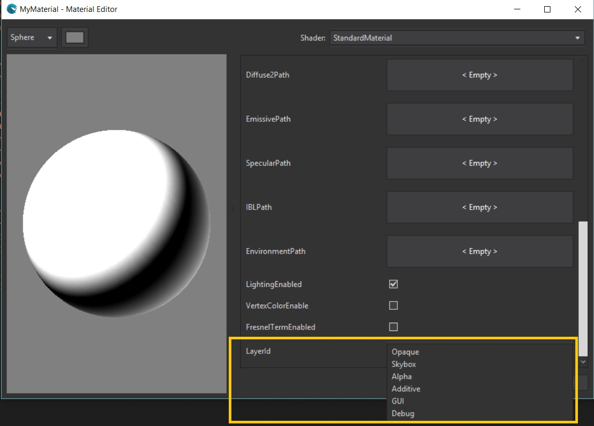

Goal
A layer is a set of render properties to draw any element. Using Render layers is an effective way to organize your drawable content. You can establish order between layers and between sprites inside those. Each render layer is drawn in sequence (First In First Draw).
Wave Engine provides a default list of render layers but, you can define as many as you need in your game. The default ones (in drawing order) are:
- Opaque
- Skybox
- Alpha
- Additive
- GUI
- Debug
It makes sense, for instance, to draw a semitransparent sprite within the alpha layer after an opaque one within the same name layer. The may be pixels from the second one which will remain visible in the final render.
You will learn within this guide how to work with this layers architecture.
Hands-on
With Wave Visual Editor
Layers are defined at project level and can be accessed through Wave Editor menu Edit/Project Properties. Selecting Render Layers you will see: 
You can modify all properties of every render layer the way you can, and you can define new ones based on an existing one by pressin the button.
This way you can now create a new Material in your project and set the LayerId property to the desired. So that material will be rendered in that layer every time it is needed:

With Visual Studio (for Windows or Mac)
In case you need it, you can reference the render layer you want by code with the WaveContent.RenderLayers property.
Wrap-up
We have learned how to modify and create new render layers in our projects.